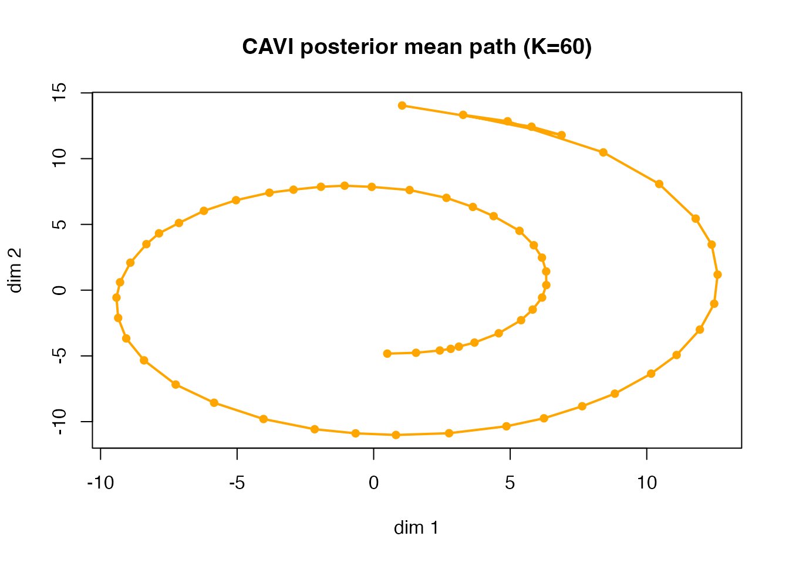

MPCurver now uses a CAVI backend through the public
fit_mpcurve() and do_mpcurve() interface. This
vignette introduces the statistical model, the variational algorithm,
and then walks through a larger but still easy spiral example.
1 Statistical model
We observe a data matrix where row is one cell and column is one feature.
The single-ordering MPCurve model assumes:
- each cell has a latent position
- each feature has a smooth trajectory over the ordered components, written as
- observations follow a Gaussian likelihood
- and each trajectory is regularized by a Gaussian Markov random field prior along the component axis: where is the random-walk precision matrix on the bins.
In the current cavi implementation:
-
sigma_j^2is feature-specific, -
lambda_jis feature-specific, - the covariance model is homoskedastic across components,
- and the posterior is approximated with a mean-field family
2 Variational algorithm
The backend used by fit_mpcurve() performs
coordinate-ascent variational inference on an explicit ELBO. Write
and for each feature
,
Under the mean-field family the ELBO can be written, up to additive constants, as
This is the quantity recorded in elbo_trace. The updates
used by the public backend are obtained by maximizing this ELBO one
block at a time.
2.1 Update for
Fix , , and . The ELBO terms involving are quadratic, so the optimal variational factor is Gaussian: where and Therefore,
This is exactly the linear-algebra step implemented by the backend
behind fit_mpcurve().
2.2 Update for
Fix , , and . Collecting the ELBO terms involving the row gives So the cell-position posterior is updated by a row-wise softmax: with equal to the right-hand side above.
The extra term is the uncertainty correction that distinguishes this update from a pure plug-in EM step.
2.4 Update for
Fixing and , differentiate the ELBO with respect to . The stationary point is
So each feature variance is updated from the posterior expected residual sum of squares.
3 Simulated spiral example
We use a larger and more stable spiral than the older vignette examples:
-
n = 1000cells, - a shorter latent range
t in [1.5*pi, 4.5*pi], - lower noise,
- and a finer mixture grid
K = 60.
sim <- simulate_swiss_roll_1d_2d(
n = 1000,
t_range = c(1.5 * pi, 4.5 * pi),
sigma = 0.12,
seed = 1
)
X <- as.matrix(sim$obs)
t_true <- sim$t
cat("Data dimensions:", nrow(X), "x", ncol(X), "\n")
#> Data dimensions: 1000 x 2
cat("t range:", round(range(t_true), 3), "\n")
#> t range: 4.725 14.137
pal <- grDevices::colorRampPalette(
c("#1F3A5F", "#2E8A99", "#F2C14E", "#E76F51")
)(256)
col_true <- pal[cut(t_true, breaks = 256, labels = FALSE)]
plot(X, col = col_true, pch = 19, cex = 0.55,
xlab = "x", ylab = "y",
main = "Observed spiral, coloured by true pseudotime")
Shorter spiral used in the introductory CAVI example.
4 Fit the default public interface
fit <- fit_mpcurve(
X,
method = "fiedler",
K = 60,
iter = 120
)
stopifnot(inherits(fit, "mpcurve"))
stopifnot(identical(fit$algorithm, "cavi"))
fit
#> MPCurve fit
#> Backend : cavi
#> Model : homoskedastic
#> n / d / K : 1000 / 2 / 60
#> Iterations : 46
#> Position prior : adaptive
#> Converged : yes
#> ELBO (last) : -4787.638294
#> logLik (last): -4474.988366
summary(fit)
#> MPCurve Model Summary
#> Algorithm : cavi | Model : homoskedastic | n=1000 d=2 K=60
#> Position prior : adaptive
#> Current pi range : [5.265e-08, 0.02495]
#> Converged : yes
#> Underlying fit summary
#> <summary.cavi>
#> n = 1000, d = 2, K = 60
#> model = homoskedastic, RW(q) = 2
#> noise model = estimated_feature_variance
#> init = fiedler, discretization = quantile, adaptive = variational
#> position prior = adaptive
#> iter = 46, converged = yes
#> last ELBO = -4787.6383 (delta last = 0.004311)
#> last logLik = -4474.9884 (delta last = 0.004553)
#> pi range = [5.265e-08, 0.02495]
#> sigma2 range = [0.1072, 0.1197]
#> lambda range = [0.7521, 2.967]
#> relative change (last step):
#> ELBO: 9e-07
#> logLik: 1.02e-06
#> lambda_vec (L2 rel): 4.74e-055 Check convergence and recovery
The default cavi fit should have a nondecreasing ELBO
trace.
stopifnot(all(diff(fit$elbo_trace) >= -1e-8))
cat("ELBO monotone:", TRUE, "\n")
#> ELBO monotone: TRUE
cat("ELBO range:", round(range(fit$elbo_trace), 3), "\n")
#> ELBO range: -7595.206 -4787.638We can also compare the inferred ordering to the true latent parameter using the posterior-mean component index
6 Visualize the fitted ordering
col_fit <- pal[cut(pseudotime_hat, breaks = 256, labels = FALSE)]
op <- par(mfrow = c(1, 2), mar = c(4, 4, 2.5, 1))
plot(X, col = col_true, pch = 19, cex = 0.5,
xlab = "x", ylab = "y", main = "Truth")
plot(X, col = col_fit, pch = 19, cex = 0.5,
xlab = "x", ylab = "y", main = "CAVI fit")
True pseudotime (left) and inferred CAVI pseudotime (right).
par(op)The built-in mpcurve plotting methods work directly on
the fitted object.
plot(fit, plot_type = "elbo")
CAVI trace plot from the fitted mpcurve object.
plot(fit, plot_type = "mu")
Posterior mean trajectories across the K bins.